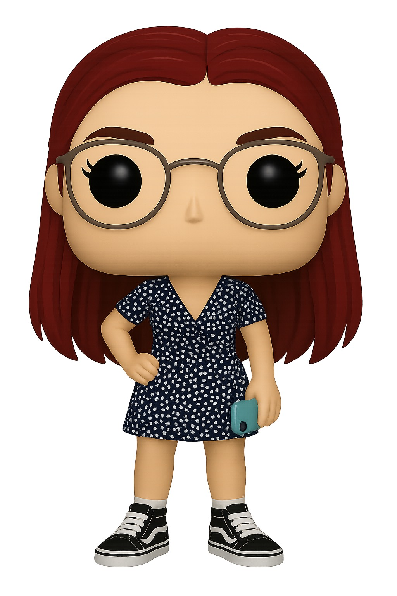
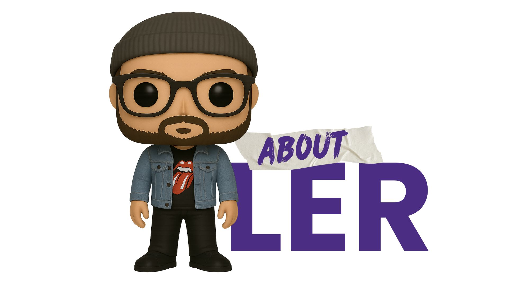

Hi! We’re Liz & Ler. We’re a couple of professionals recently arrived in Niagara and looking for job opportunities. If either of us is hired thanks to your referral, you’ll get $100 CAD on our first payday!
About Us
We know you don't know us yet, so here's a little about our journey.
Not long ago, we made one of the biggest decisions of our lives: to start over in Canada. With our hearts pounding, we packed our entire lives into just four suitcases. Along with our two cats, we set out to write a new story—together. With nerves, hope, and many dreams, we landed in this amazing country, ready to begin again. Today, we live in the Niagara region. Adapting hasn't been easy, and finding work has been one of our biggest challenges. But instead of giving up, we chose to try something different. Because we believe in the power of genuine connections—the kind that change lives. That’s why we invite you to be part of this new chapter in our story.
Get to Know Us
About Liz
- Interests: Marketing, Graphic Design, Retail, Sports stores, Print agencies
- Experience: Graphic Designer, Customer Service Associate
- Skills: Creativity, detail orientation, leadership, adaptability, fast learning, great communication
- Desired Roles: Design/Marketing (+$20 CAD), Customer Service
- Availability: Full-time
- Hobbies: Soccer, movies/TV, board games, outdoor activities
Refer for Customer Service
About Ler
- Interests: Tech, Consulting, Call centers, Banks, Parks, Warehouses
- Experience: Business Analyst, Data Analyst, Ride Operator, Sales Advisor, Warehouse Staff
- Skills: Analytical thinking, fast learner, organization, adaptability, attention to detail
- Desired Roles: Administrative (+$20 CAD), Customer Service
- Availability: Part-time
- Hobbies: Biking, Chess, Cooking, Soccer, Nature, Running
Refer for Customer Service
Terms and Conditions
- Description: This referral campaign rewards individuals who help us connect with real job opportunities. If your referral results in a legal hiring, you’ll receive $100 CAD.
- Eligible Participants: Any adult individual except:
- Those involved in hiring decisions (HR, managers, etc.)
- Close family members (parents, siblings, partners) of such individuals
- Employers referring themselves to claim the reward
- Reward Payment: The $100 CAD will be paid on our first paycheck if:
- Your referral directly led to the hiring
- You meet eligibility requirements
- You provide the necessary payment details
- Limitations: Only one reward per hire. Not valid if we had already applied to the referred job. We reserve the right to reject entries for abuse or dishonesty.
- Nature: This is a personal initiative by Liz & Ler, with no affiliation to any company. It is not a job offer or formal recruitment.
- Privacy: Your information will be used only for this campaign.
- Duplicate Referrals: First received email (by timestamp) wins. If unclear, we will decide case-by-case or split the reward.
- Validity: The campaign ends when both of us are hired. We’ll announce the closure via Instagram and TikTok. Referrals received after closure are not valid.